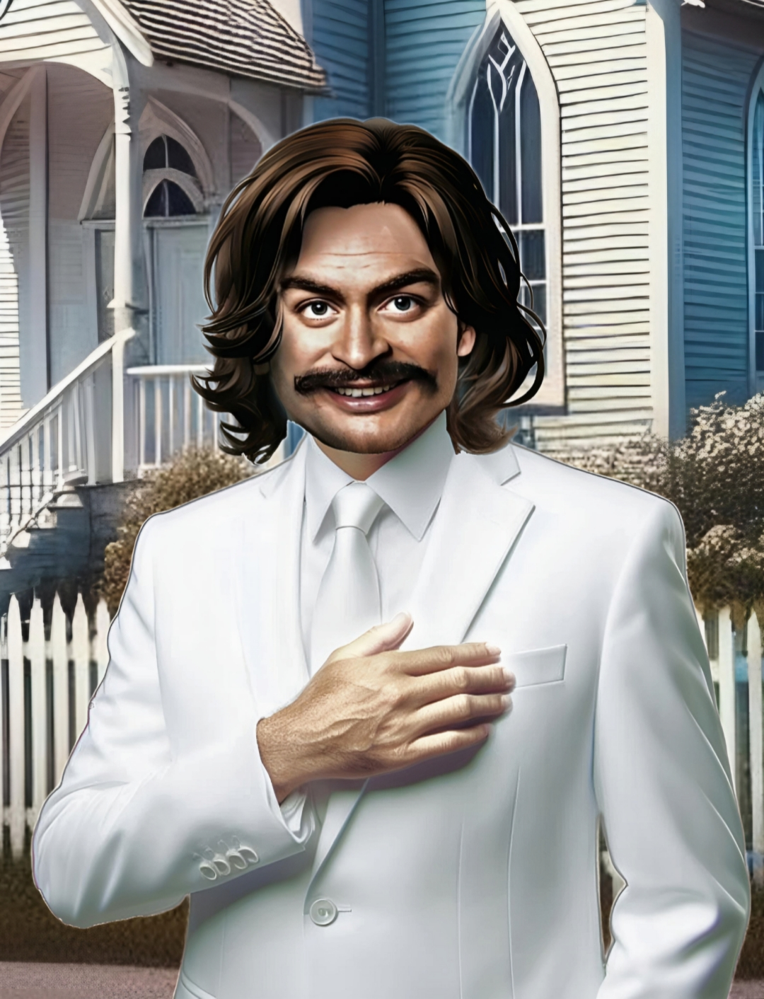
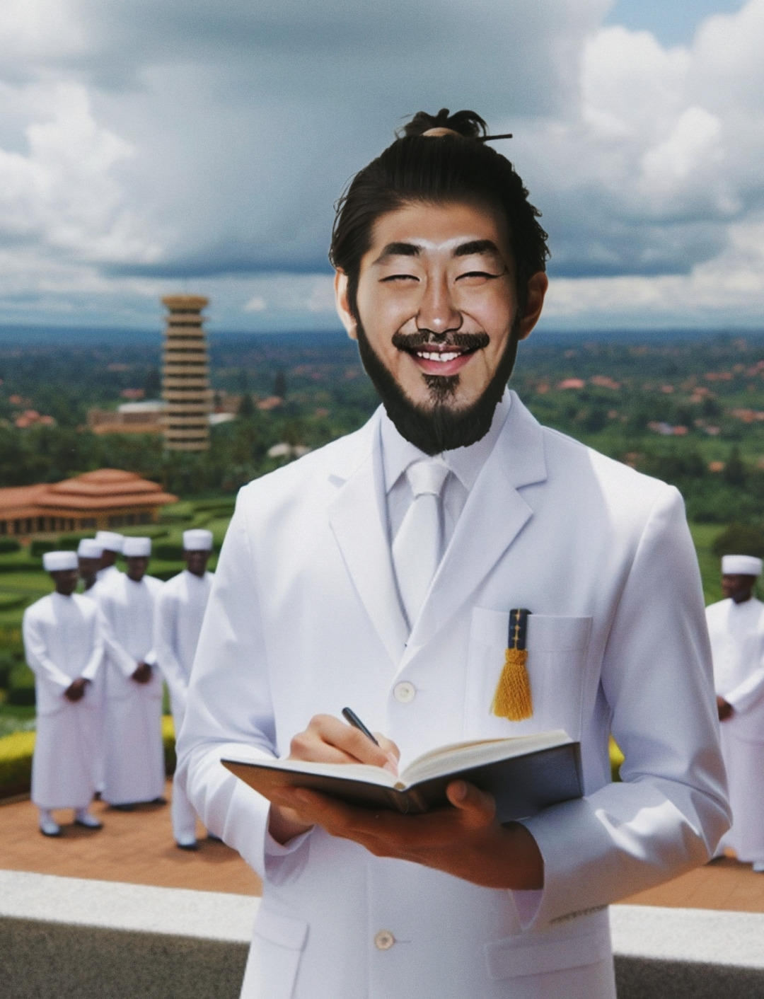

Jeremiah Oatberg urodził się 15 maja 1970 roku w Amsterdamie. Jego narodziny można nazwać cudem, ponieważ doszło podczas nich do ostrej niewydolności krążeniowo-oddechowej niemowlęcia, które było owinięte pępowiną. Dzięki bożej opatrzności nowy ojciec założyciel mógł przyjść na świat. Wychowywał się w holenderskiej, protestanckiej rodzinie o żydowskim pochodzeniu. Jego ojciec, Lars Ruben Oatberg, prowadził kalwińskie wydawnictwo "Rodzina". Jeremiah od najmłodszych lat był ciekawy świata i wykazywał empatię wobec ludzkiego cierpienia. Jego wychowanie odbywało się w tradycyjnych wartościach, ale dorastając w mieście "wolnych umysłów", był otwarty na różne formy poznawania rzeczywistości i wyrażania wiary. W 1993 roku ukończył filozofię na Uniwersytecie Amsterdamskim. W 1994 odziedziczył majątek po ojcu, który wcześniej zmarł na raka trzustki. Pod wpływem tego wydarzenia Jeremiah postanowił poświęcić swoje życie pomaganiu ludziom na całym świecie, co zaowocowało koncepcją tworzenia "Dobrego Świata". Zaczął przeznaczać większość swojego majątku na organizacje charytatywne oraz sponsoring wszelkich inwestycji rozwijających społeczeństwo. Cieszył się dużym autorytetem wśród mas, podróżując po Europie jako wędrowny kaznodzieja. W 1997 roku udał się do Egiptu na trzymiesięczną samotnię. Podczas nowego, nieznanego dotąd rytuału - Inkantacji Zielonej Rośliny oraz głębokiej kontemplacji - Jeremiah doznał boskiego objawienia, kontaktując się z czcigodnym wysłannikiem Yaba'ghöul. Przekazał mu wiedzę, która miała odmienić ludzkość. Pod wpływem tego oświecenia napisał najważniejsze dzieło w historii ludzkości - Doktrynę Dobrego Świata. Wtedy też całkowicie odseparował się od kalwinizmu, poznając Prawdę. W 1998 roku założył Partię Dobrego Świata, której słowo zyskało popularność w wielu krajach. Poznał Zazaela Satayoshiego w Kalkucie, chrześcijańskiego misjonarza z Japonii, który doznał Trzech Widzeń podczas podróży po Afryce, pokrywających się z Oświeceniem Jeremiaha. Obaj wyjechali potem do Chin, aby walczyć z reżimem komunistycznym. Ich męstwo doprowadziło do powstania małej społeczności przeciwstawiającej się dyktaturze. Jednak większość opozycji została zatrzymana przez tajne służby, a Oatberg i Satayoshi musieli uciekać z Chin w roku 2000. Od tamtej pory chińska agentura stara się ich zlikwidować. W 2005 roku doszło do zamachu na życie Ojca Założyciela podczas pobytu w Rumunii. Mimo otrucia "bułgarskim parasolem", dzięki Bożej Sprawczości Jeremiah zdołał ponownie uniknąć śmierci. Jednak nigdy nie wrócił do pełni zdrowia. Od 2008 roku zaczął zakładać Kliniki Medycyny Braterstwa na całym świecie. W 2012 roku odbył się pierwszy festiwal inkantacji zielonej rośliny, który corocznie organizowany jest w różnych miejscach.
Zazael Satayoshi urodził się 23 września 1974 roku w Nagasaki. Wychowywał się w mniejszości katolickiej, co często narażało go na szykany ze strony rówieśników z powodu jego odmienności. W rezultacie stał się cichym i wycofanym chłopcem, jednak w głębi duszy rodziło się w nim poczucie niesprawiedliwości. Zazael utwierdził się w swoich poglądach, które towarzyszyły mu przez całe nastoletnie życie. Mimo smutku i zawodu chciał przynosić dobro światu. W wieku 18 lat zapisał się na swoją pierwszą misję do Indii, podróżując w ten sposób przez pół świata, włączając w to Europę. Jednak widząc, co Europejczycy dokonali w krajach kolonialnych, nie darzył ich szczególną sympatią. Z czasem, wraz z kolejnymi wyprawami, zaczął coraz bardziej wątpić w Boskie Dzieło, obserwując tyle cierpienia i niepewności w świecie. W 1994 roku zawarł pakt z Bogiem, przysięgając na imię matki, że przejdzie przez całą Afrykę aż do Ziemi Świętej, Jerozolimy. Jego tułaczka trwała 3 lata, podczas których doświadczał jeszcze większego cierpienia, prowadząc go do głębokiego kryzysu wiary. Jednak 5 lipca 1997 roku doznał błogosławionego objawienia, gdy został niechcący postrzelony przez kłuszownika polującego na słonie. W tym doświadczeniu zrozumiał Prawdę i przeobraził się w Bojownika Dobrego Ludu, skupiając swą wolę na działaniu. Niedługo potem poznał Jeremiaha Oatberga, z którym dzielił wezwanie od tego samego anioła, Yaba'ghöula. Zaczęli razem studiować Słowo i przygotowywać się do walki z komunizmem w Chinach. Został założycielem Stowarzyszenia Antykomunistycznego w 2006 roku i od tego czasu prowadził walkę słowem, zwyciężając w licznych debatach teologicznych i politycznych. W 2024 roku Ruch Raeliański ogłosił go wrogiem numer jeden.